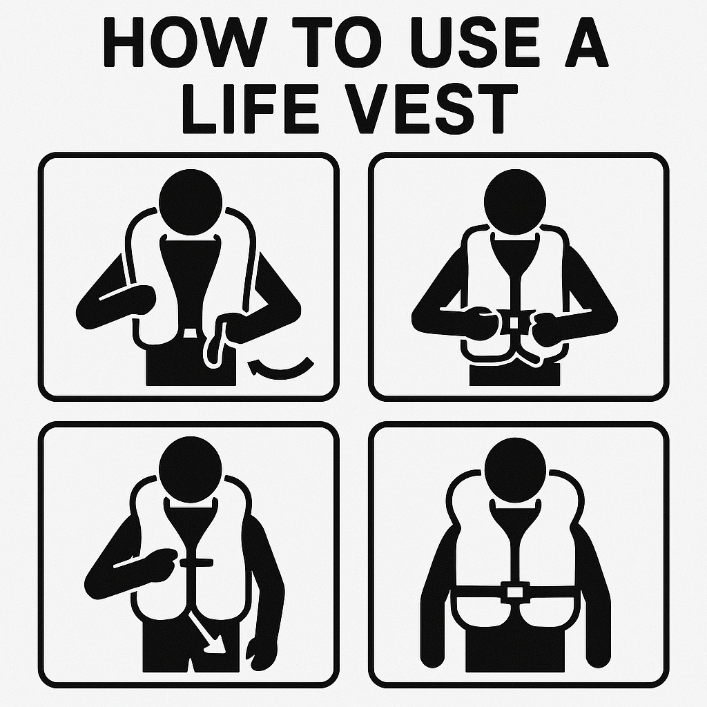

Overview
Purpose
My purpose is to create the best white water rafting website of all time. It should be extremely easy to traverse, make sense, and look awesome!
Audience
Our main audience is anyone who wants to do white water rafting! Regardless of age or interests we have something for everyone!
Branding
Website Logo

Style Guide
Color Palette
Palette URL:
https://coolors.co/396e94-e7c24f-a43312-381d2a-aabd8c| Primary | Secondary | Accent 1 | Accent 2 |
|---|---|---|---|
| [#7BAACC] | [#E4B93A] | [#381D2A] | [#FFFFF] |
Typography
Heading Font: Cursive
Paragraph Font: Cursive
Normal paragraph example
We are the best rafting company in northern California! We have been around for about 5 months, but don't let that stop you from coming over as we know the best spots!
Colored paragraph example
Everyone is welcome! We have places for all ages. doesnt matter if you are 7 or 70 years old we have a good spot for you. We even supply rides to places free of charge.
Navigation
Site Map
Wireframes
Home

[Page 2]
White Water Rafting Safety Procedures
White water rafting may be a super fun awesome activity! But it still has times where it is dangerous and can be deadly.
Because of that we want to ensure that everyone knows what safety procedures we have
Competent swimmer: Be a confident swimmer or at least comfortable in the water.
Life jacket and helmet: Wear a properly fitted, Coast Guard-approved life jacket and a helmet at all times.
Clothing and footwear: Wear quick-drying, moisture-wicking clothing and secure, closed-toe shoes that won't easily come off.
Sun protection: Use sunscreen, sunglasses, and potentially a hat to protect from the sun.
With these bits of advice your trip white water rafting will be a safer and more enjoyable journey than ever before!